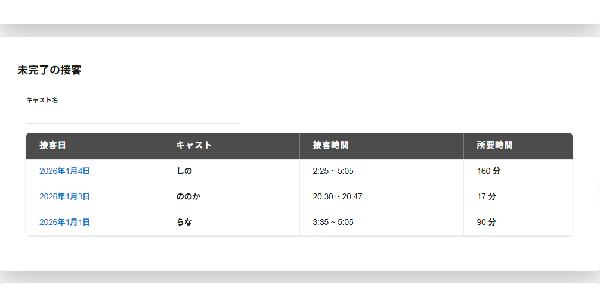

未完了スケジュールの本日以前の未完了の接客には未完了の接客の以下の項目が一覧で表示されます。
・キャスト名検索
入力した文字が含まれるキャストが一覧で表示されます。
・接客日
接客開始時の年月日が表示されます。
・キャスト
対象の接客のキャスト名が表示されます。
・接客時刻
未完了の接客を開始した時刻が表示されます。
・所要時刻
未完了の接客を開始してから経過した時刻が表示されます。
対象のキャストの列をクリックすると接客詳細が表示されます。
※未完了の接客がない場合は未完了の接客が表示されません。
